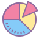
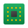

Web Development
Build websites, web apps, dashboards and more.
You can build:
✔ Personal websites
✔ Web applications
✔ Portfolios & Blogs
✔ Dashboards & Tools
Top skills:
HTML
CSS
JavaScript
TypeScript
View Path
Game Development
Build 2D and 3d games for fun or even for the world.
You can build:
✔ 2D Games
✔ 3D Games
✔ Platformers
✔ RPGs & Adventure Games
Top skills:
Godot
GDScript
Unity
C#
View Path
AI & Machine Learning
Build smart apps,AI models,chatbots and predictions.
You can build:
✔ Chatbots
✔ Image Recongnition
✔ Prediction Systems
✔ Recommendation Engines
Top skills:
Python
ML
Data
AI
View Path
Mobile Development
Build mobile apps for Android,iOS or cross-platform
You can build:
✔ Android Apps
✔ iOS Apps
✔ Cross-platform Apps
✔ Mobile Games
Top skills:
Kotlin
Swift
Flutter
Dart
View Path
Desktop Development
Build powerful tools and applications for desktop.
You can build:
✔ Productivity Apps
✔ Utility Tools
✔ Media Players
✔ System Utilities
Top skills:
Python
C#
C++
Java
View Path
Automation & Tools
Automate tasks, build scripts and useful command line tools.
You can build:
✔ Automation Scripts
✔ CLI Tools
✔ File & Data Automation
✔ Personal Utilities
Top skills:
Python
JavaScript
Bash
PowerShell
View Path

Data & Analytics
Analyse data, create visualizations and build data-driven apps.
You can build:
✔ Data Analysics Projects
✔ Visualization Dahboards
✔ Reports
✔ Data Pipelines
Top skills:
Python
Pandas
SQL
Power BI
View Path

Hardware/Embedded
Work with electronics,sensors and embedded systems
You can build:
✔ Robots
✔ IoT Devices
✔ Sensor Projects
✔ Microcontrollers Apps
Top skills:
C
C++
MicroPython
Arduino
View Path